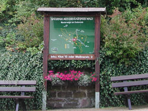

Aktivitäten
Dudenrode ist ein Paradies für Wanderer und Naturfreunde. Gut ausgeschilderte Wanderwege führen Sie durch intakte Natur mit seltenen Pflanzen und Bäumen.


Eindrucksvolle Fernsichten gewährt auch der Panoramaweg
Nr. 1 (7,5 km) rund um Dudenrode.
Wanderziele in der herrlichen Umgebung sind u.a. der Rosskopf mit Aussichtsturm, der Hilgershäuser Höhle und der Kripplöcher (Dolinen). Für geübte Wanderer sind auch die Burgruine Hanstein, die Teufelskanzel bei Lindewerra im Werratal und die benachbarte Jugendburg Ludwigstein lohnende Ziele.